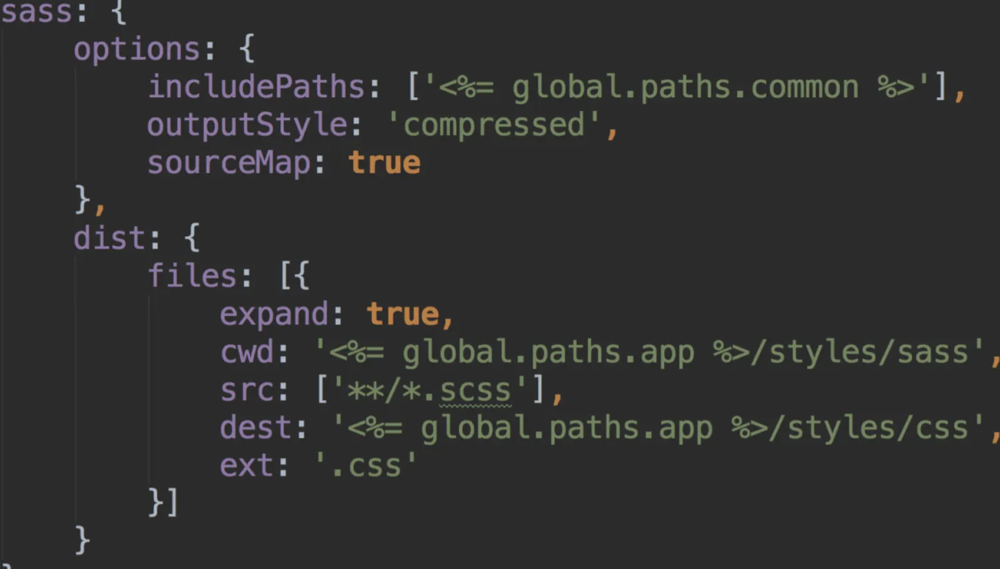
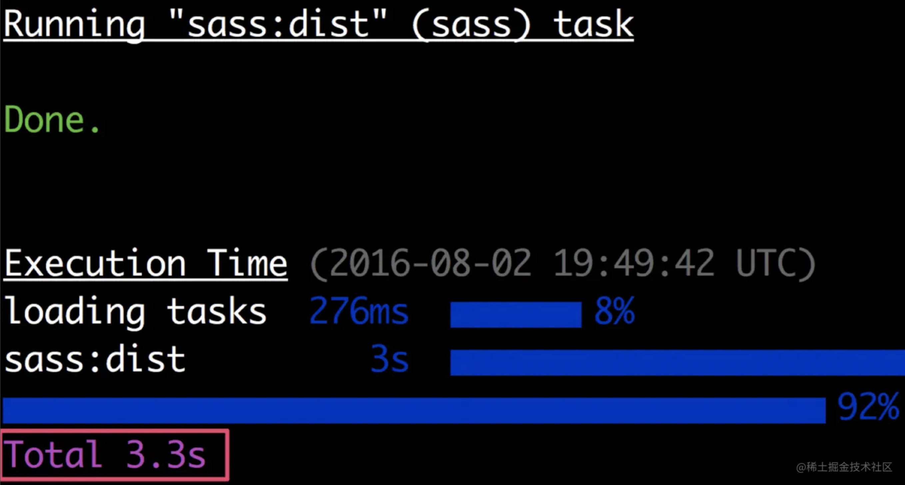

谈谈 CSS 预处理器
背景
CSS 自诞生以来，基本语法和核心机制一直没有本质上的变化，它的发展几乎全是表现力层面上的提升。然而如今网站的复杂度已不可同日而语，原生 CSS 逐渐让开发者力不从心
当一门语言的能力不足而用户的运行环境又不支持其它选择时，这门语言就会沦为 “编译目标” 语言，开发者将选择另一门更高级的语言来进行开发，然后编译到底层语言以便实际运行
于是在前端领域，CSS 预处理器应运而生，简化 CSS 代码的编写
百花齐放
CSS 预处理器是一个能让你通过预处理自己独有的语法来生成 CSS 的程序
市面上有很多 CSS 预处理器可供选择，且绝大多数 CSS 预处理器会增加一些原生 CSS 不具备或不完善的高级特性，这些特性让 CSS 的结构更加具有可读性且易于维护，当前社区代表的 CSS 预处理器主要有一下几种：
- Sass：2007 年诞生，最早也是最成熟的
CSS预处理器，拥有Ruby社区的支持和Compass这一最强大的CSS框架，目前受LESS影响，已进化到了全面兼容CSS的Scss - Less：2009 年出现，受
Sass的影响较大，但又使用CSS的语法，让大部分开发者和设计师更容易上手，在Ruby社区外支持者远超过Sass，其缺点是比起Sass来可编程功能不够，不过优点是简单和兼容CSS，反过来也影响了Sass演变到了Scss的时代，著名的Twitter Bootstrap就是采用Less做底层语言的 - Stylus：
Stylus是一个CSS的预处理框架，2010年产生，来自Node.js社区，主要用来给Node项目进行CSS预处理支持，所以Stylus是一种新型语言，可创建健壮的、动态的、富有表现力的CSS。比较年轻，其本质上做的事情与Sass/Less等类似
预处理器赋予的 “超能力”
文件切分
页面越来越复杂，需要加载的 CSS 文件也越来越大，有必要把大文件切分开来，否则难以维护
传统的 CSS 文件切分方案基本上就是 CSS 原生的 @import 指令，或在 HTML 中加载多个 CSS 文件，这些方案通常不能满足性能要求
模块化
- 把文件切分的思路再向前推进一步，就是 “模块化”，一个大的
CSS文件在合理切分后，所产生的这些小文件的相互关系应该是一个树形结构 - 树形的根结节一般称作
“入口文件”，树形的其它节点一般称作“模块文件”，入口文件通常会依赖多个模块文件，各个模块文件也可能会依赖其它更末端的模块，从而构成整个树形 - 模块化是一种非常好的代码组织方式，是开发者设计代码结构的重要手段，模块可以很清晰地实现代码的分层、复用和依赖管理，让
CSS的开发过程也能享受到现代程序开发的便利
嵌套
嵌套是文件内部的代码组织方式，它可以让一系列相关的规则呈现出层级关系
在以前若要达到这个目的，写法如下。这种写法需手工维护缩进关系，当上级选择符发生变化时所有相关的下级选择符都要修改；此外把每条规则写成一行也不易阅读，为单条声明写注释也很尴尬（只能插在声明之间）
1 | .nav {margin: auto /* 水平居中 */; width: 1000px; color: #333;} |
在 CSS 预处理语言中，嵌套语法可以很容易地表达出规则之间的层级关系，为单条声明写注释也很清晰易读
1 | .nav { |
除了 &，Sass 和 Stylus 还分别用 @at-root 和 ”/“ 符号作为嵌套时根规则集的选择器引用
首先以 Less 为例讨论嵌套语法
1 | #sort { |
Sass 还提出了属性嵌套，属性嵌套指的是有些属性拥有相同的开始单词，如border-width，border-color 都是以 border 开头。官网的实例如下：
1 | .fakeshadow { |
变量
在变量出现之前，CSS 中的所有属性值都是 “幻数”，不知道这个值是怎么来的、它有什么意义等，有了变量后就可给这些 “幻数” 起个名字，便于记忆、阅读和理解
当某个特定的值在多处用到时，变量就是一种简单而有效的抽象方式，可以把这种重复消灭掉，变量让开发者更容易实现网站视觉风格的统一，也让 “换肤” 这样的需求变得更加轻松易行
Sass 变量名必须以 $ 开始，变量名和变量值之间以冒号 : 隔开
1 | $color = #ff4466 |
Less 变量名必须以 @ 符号开头，变量名和变量值之间以冒号 : 隔开
问题：
@规则在CSS中算是一种原生的扩展方式，变量名用@开头很可能会和以后CSS中的新@规则冲突
1 | @color = #ff4466 |
Stylus 对变量名没有任何限定，变量名与变量值之间可以用冒号、空格和等号隔开
1 | color = #ff4466 |
Stylus 还有一个独特功能，它不需分配值给变量就可以定义引用属性
1 | #logo position: absolute top: 50% left: 50% width: w = 150px height: h = 80px margin-left: -(w / 2) margin-top: -(h / 2) |
变量作用域
三种预处理器中定义的变量都有作用域，查找变量的顺序是先在局部定义中查找，若没有则逐级向上查找
如果在代码中重写某个已定义的变量，Less 的处理逻辑和其他两个有区别
Less 中这个行为叫懒加载（Lazy Loading），注意 Less 中所有变量的计算都是以这个变量最后一次被定义的值为准
1 | @size: 40px |
在 Sass 中情况如下
1 | $size: 40px; |
Stylus 和 Sass 行为相同，变量的计算以变量最近一次的定义为准
变量插值
预处理器中定义的变量不仅可用作属性值，还可用作选择器、属性名等，这就是变量插值
变量名插值
Less 中支持以 @@var 的形式引用变量，即该变量的名字是由 @var 的值决定的
选择器插值
Less
1 | @way: new; |
Sass
1 | $way: new; |
Stylus
1 | way: new; |
解析结果都是：
1 | .new-task { font-size: 18px;} |
注意：在
Less中，通过选择器插值生成的规则无法被继承
@import插值
Sass 中只能在使用 url() 表达式时进行变量 @import 插值
1 | $device: mobile; |
Less 中可以在字符串中进行插值
1 | @device: mobile; |
Stylus 中没有 @import 插值，但可利用其字符串拼接的功能实现
1 | device = "mobile" |
属性名插值
三个预处理器均支持属性名插值，使用方式且和上述插值类似
运算
若说变量让值有了意义，运算则可以让值和值建立关联
有些属性值跟其它属性值是紧密相关的，CSS 语法无法表达这层关系；而在预处理语言中可用变量和表达式来呈现这种关系
1 | // 只能用注释来表达 max-height 的值是怎么来的，且注释中 3 这样的值也是幻数，还需进一步解释 |
函数
把常用的运算操作抽象出来，就得到了函数
开发者可自定义函数，预处理器自己也内置了大量的函数，最常用的内置函数应该就是颜色的运算函数，有了它们，甚至都不需打开 Photoshop 来调色就可得到某个颜色的同色系变种
预处理器的函数往往还支持默认参数、具名实参、arguments 对象等高级功能，内部还可设置条件分支，可满足复杂逻辑需求
1 | // 给一个按钮添加鼠标悬停效果 |
Less 中不能自定义函数，Sass 和 Stylus 可以
Sass自定义函数用法如下，需使用@function，并用@return指令返回结果1
2
3
4
5@function pxToRem($px) {
@return $px / 2;
}
body{ font-size: pxToRem(32px);}Stylus中则无需这些指令1
2pxToRem(n) n / 2body
font-size: pxToRem(32px)
Mixins
Mixins是CSS预处理器语言中最强大的特性，简单点来说Mixins可将一部分样式抽出，作为单独定义的模块，被很多选择器重复使用
mixins 有点像 C 语言中的宏，当某段 CSS 经常需在多个元素中使用时，可为这些共用的 CSS 定义一个 mixin，然后只需在需要引用这些 CSS 地方调用该 mixin 即可
Sass
Sass 样式中声明 Mixins 时需使用 @mixin，后面紧跟 Mixins 名，也可定义参数同时给这个参数设置一个默认值，但参数名是使用 $ 符号开始且和参数值之间需使用冒号 : 分开
Sass 用 @mixin 和 @include 两个指令清楚地说明了 mixin 的定义和引用方式
1 | // 声明一个 Mixins 叫作 error |
Less
在 Less 中，混合是指将定义好的 ClassA 中引入另一个已经定义的 Class，就像在之前的 Class 中增加一个属性
Less 样式中声明 Mixins 和 Sass 声明方法不一样，它更像 CSS 定义样式，在 Less 可将 Mixins 看成是一个类选择器，当然 Mixins 也可设置参数并给参数设置默认值，不过设置参数的变量名是使用 @ 开头，同样参数和默认参数值间需使用冒号 : 分隔开
1 | // 声明一个 Mixin 叫作 error |
Less 的 mixin 需要注意：同名的 mixin 不是后面的覆盖前面的，而是会累加输出
这就会产生一个问题，若存在和 mixin 同名的 class 样式，且 mixin 没有参数，则在调用时会把对应的 class 样式一起输出，这显然不是我们所需要的
Stylus
Stylus 中的混合和前两款 CSS 预处理器语言的混合略有不同，它可不使用任何符号就直接声明 Mixins 名，然后在定义参数和默认值之间用等号 = 来连接
1 | // 声明一个 Mixin 叫作 error |
以上三个示例都将会转译成相同的 CSS 代码
1 | .generic-error { |
继承
和混入的作用类似，为什么需要继承呢？- 混入确实很好用，但如果多个地方都混入同样的代码，会造成代码的重复。例如：
1 | .block { |
而实际期望的输出：
1 | .block, p { |
用继承就可以实现上面的输出，不会有重复的代码（以 Sass 为例）
1 | .block { |
Stylus 的继承来源于 Sass，两者使用方式相同。而 Less 则用伪类来实现继承：
1 | .block { |
Less 默认只继承父类本身的样式，如果要同时继承嵌套定义在父类作用域下的样式，得使用关键字 all，如 &:extend(.block all)
@import
@import 的作用是从其他样式表导入样式，三种预处理器的 @import 的使用方式各不相同
除了基本的功能外，Less 引入了 import 选项来扩展 @import 的语法
1 | @import (keyword) "filename"; |
其中 keyword 可以是如下几种选项（可以联合使用）
reference：使用一个外部文件参与编译，但不输出其内容inline：直接将引入的文件放入输出文件中，但不处理这个引入的文件less：不管文件扩展名是什么都将该文件作为一个Less文件处理css：不管文件扩展名是什么都将该文件作为一个CSS文件处理once：只引入文件一次（去重），这是默认方式multiple：可以引入文件多次
Sass 则没有 Less 的这些扩展语法，它自己推断引入的方式。它的 @import 不会被去重，多次引入会导致一个样式文件被多次输出到编译结果中
Stylus 的 @import 和 Sass 一样都是自己推断引入的方式，但 Stylus 可以进行引入文件的去重，它有一个自定义的指令 @require，用法和 @import 一样，但引入的文件只会编译一次
运算符
三种预处理器都具有运算的特性，可对数值型的 Value (如：数字、颜色、变量等) 进行加减乘除四则运算
Stylus 的中文文档中，详细讨论了 Stylus 的运算符
逻辑控制
Sass 中通过 @if、@else 实现条件判断来提供语言的流控制，通过 @for、@each、@while 实现循环，然后配合 map 和 list 这两种数据类型可实现多数编程语言提供的功能
Sass 中还实现了一个三目判断，语法为：if($condition, $if_true, $if_false)，三个参数分别表示：条件，条件为真的值，条件为假的值
Stylus 中通过 if、else if、else、unless（基本与 if 相反）实现条件判断来提供语言的流控制，通过 for/in 实现循环迭代
而 Less 中没有上述复杂的语法，只通过 guarded mixins 代替 if/else 实现简单的条件判断
1 | .mixin (@a) when (lightness(@a) >= 50%) { |
缺点
额外的编译配置：在写样式前需做一些额外的编译配置工作，
sass-node安装以及编译的配置就能卡住一批前端新手
编译成本：每次修改代码都需要重新编译，占用时间和
CPU
学习成本：不同的
CSS预处理器语法不同，增加学习成本；在同一个团队甚至项目里，可能同时使用了好几种样式预处理器1
2
3
4
5
6
7
8
9
10
11
12
13
14
15
16
17
18
19
20
21
22
23
24
25
26
27
28
29
30
31// Sass
$color: #f00;
$images: "../img";
@mixin clearfix {
&:after {
content: " ";
display: block;
clear: both;
}
}
body {
color: $color;
background: url("#{images}/1.png");
@include clearfix;
}
// Less
@color: #f00;
@images: "../img";
.clearfix() {
&:after {
content: " ";
display: block;
clear: both;
}
}
body {
color: @color;
background: url("@{images}/1.png");
.clearfix;
}调试：在使用
CSS预处理器时，通常会配置SourceMap来辅助调试，但即使这样，还是会碰到一些调试困难的情况
回归 CSS
各种 CSS 预处理器在更新迭代的过程中功能越来越繁杂花哨，但绝大部分人用到的核心功能还是那几样：Variables、Mixin、Nested、Module，顶多再加上一些工具类函数
若既想要预处理器的优点，又不想要它带来的成本和缺点，有没有两全其美的办法？CSS 这么多年一直也在从社区汲取养分加速进化和迭代，能不能从 CSS 标准里找到答案呢？
Variables in CSS
CSS 自定义属性（CSS Custom Properties)，又叫 CSS 变量（CSS Variable），允许在样式中声明变量并通过 var() 函数使用
CSS Custom Properties for Cascading Variables 规范在 2012 年 10 月首次作为工作草案（WD）提出，并在 2015 年 10 月到达候选人推荐标准（CR）阶段，现在浏览器支持程度已经接近 93%
CSS 变量定义及使用如下所示，可定义的类型极其丰富，不同于 Sass 预处理器变量的编译时处理，CSS 变量是浏览器在运行时进行处理的，因此 CSS 变量会更加强大和灵活
1 | /* declaration */ |
为什么变量的定义以
--开头？原因在这里：Let’s Talk about CSS Variables
Operators
可以使用 calc() 进行计算
1 | :root { |
Generate Colors
可以用于通过 RGB 等函数生成和计算颜色：Generate Colors
CSS to JS
CSS 变量出现前，从 CSS 传值给 JS 非常困难，甚至需借助一些 Hack 的手法
现使用 CSS 变量，可直接通过 JS 获取变量值并进行修改
1 | .breakpoints-data { |
Custom Theme
- 使用
CSS变量，定制和动态切换网站主题非常简单方便 - 首先定义好不同主题下的变量，然后正常书写样式即可
- 通过
JS改变元素属性，动态切换主题
1 | html { |
更多高级用法可以参考：CSS custom properties (native variables) In-Depth
Mixins in CSS
CSS 的有一个提案：CSS @apply Rule，按照该草案描述，用户可直接使用 CSS 变量存放声明块，然后通过 @apply rule 使用
可惜这个提案已被废弃，具体废弃原因感兴趣的可以看看这篇文章：Why I Abandoned @apply。尽管 Mixins 现在 CSS 还没有好的实现标准，但坚信迟早会有更优秀的规范涌现出来弥补 CSS 的这一块空白
1 | :root { |
Nesting in CSS
CSS 里已经有 Nesting 的规范出现，尽管现在只处于 Editor’s Draft 阶段：CSS Nesting Module Level 3，可看到按照 CSS Nesting Module``，Nesting 规范基本和预处理器一模一样
1 | /* Dropdown menu on hover */ |
Module in CSS
其实 CSS 很早就有了模块化方案，即 @import，使用 CSS 的 @import 规则可引用其他的文件样式，这特性从 IE5.5 开始就被所有的浏览器支持，那为什么一直以来使用者寥寥无几呢，原因很多：
- 在一些老的浏览器有加载顺序的
bug - 无法并行加载
- 导致过多的请求数量
- …
现在前端项目基本都使用构建工具（Gulp、Webpack 等）打包后再上线，因此以上哪些缺点也就不存在了，而在 Webpack 的 css-loader 中，是可以配置是否开启 @import 的
Selector Helpers
除了上面介绍的一些主要特性，CSS 还提供了一些全新的特性来帮助更优雅的书写样式:matches pseudo-class（已更名为 :is()）
:matches()，CSS 伪类函数将选择器列表作为参数，并选择该列表中任意一个选择器可以选择的元素，这对于以更紧凑的形式编写大型选择器非常有用，而且浏览器支持程度也已经接近 93%
想要了解更多详情可以查看规范：Selectors Level 4
1 | /* 语法 */ |
@custom-selector
还可使用自定义选择器来定义可以匹配复杂选择器的别名
1
2/* 语法 */
@custom-selector: <custom-selector> <selector-list>;定义的方式和
CSS变量类似，使用起来稍微有点区别1
2
3
4
5
6
7
8
9
10
11
12
13
14@custom-selector:--text-inputs input[type="text"], input[type="password"];
:--text-inputs.disabled,
:--text-inputs[disabled] {
opacity: 0.5
}
/* 相当于以下代码 */
input[type="text"].disabled,
input[type="password"].disabled,
input[type="text"][disabled],
input[type="password"][disabled] {
opacity: 0.5
}
用起来
尽管上述的 CSS 特性还处于不同阶段，浏览器的支持程度也不尽相同，但使用 postcss-preset-env，就可以抢先尝试 CSS 的最新特性
postcss-preset-env 的配置十分简单，以 Webpack 为例
1 | rules: [ |
总结
经过一番梳理，尽管 CSS 在社区的刺激下加快了更新迭代的速度，但到目前为止依然达不到 CSS 预处理器 VS CSS 的地步，只能说在使用 CSS 预处理器时，也可在项目中尝试一些优秀的 CSS 新特性，即：CSS 预处理器 + CSS
在 W3C 的推动下，随着 CSS 自身不断完善，CSS 预处理器终究会像当年的 CoffeScript、Jade 一样变成时代的过渡产物，到那时也就不用纠结各种 CSS 预处理器的环境配置和技术选型等，直接打开编辑器，就能愉快的书写样式